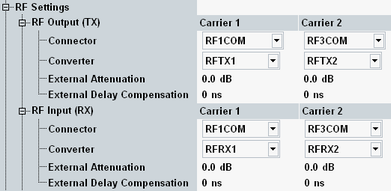

The parameters in this section provide general signal settings and configure the RF input and output paths.
Depending on the selected scenario the section configures one input and one output path, one input and two output paths or two input and two output paths.

The following parameters configure the RF output path of the R&S CMW.
Selects the output path for the generated RF signal, i.e. the output connector and the TX module to be used.
Depending on your hardware configuration, there are dependencies between both parameters. Select the RF connector first. The "Converter" parameter offers only values compatible with the selected RF connector.
Depending on the active scenario, you can configure several output paths. Select a different TX module for each output path. Multiple downlink carriers can be combined on one TX module for the single band scenarios "Dual Carrier", "Dual Carrier HSPA" and "3C HSPA". For the limitations, refer to "Output Power (Ior)".
Remote command:Depends on the scenario, see "Routing Settings".
Defines the value of an external attenuation (or gain, if the value is negative) in the output path. With an external attenuation of x dB, the power of the generated signal is increased by x dB. The actual generated levels are equal to the displayed values plus the external attenuation.
If a correction table for frequency-dependent attenuation is active for the chosen connector, then the table name and a button are displayed. Press the button to display the table entries.
If the active scenario uses several output paths, you can configure the external attenuation individually for each path.
For several carriers sharing one RF TX module, the external attenuation is specified for all carriers using the same module.
Remote command:Defines the value of an external time delay in the output path, for example caused by a long optical fiber cable or by an additional instrument in the output path.
As a result, the downlink signal is sent earlier, so that the downlink signal arrives at the UE without delay.
Remote command:The following parameters configure the RF input path of the R&S CMW.
Selects the input path for the measured RF signal, i.e. the input connector and the RX module to be used.
Depending on the active scenario, you can configure several input paths. Select a different RX module for each input path. Multiple uplink carriers can be combined on one RX module for the single band scenarios "Dual Carrier HSPA" and "3C HSPA".
Remote command:Depends on the scenario, see "Routing Settings".
Defines the value of an external attenuation (or gain, if the value is negative) in the input path. The power readings of the R&S CMW are corrected by the external attenuation value.
The external attenuation value is also used in the calculation of the maximum input power that the R&S CMW can measure.
If a correction table for frequency-dependent attenuation is active for the chosen connector, then the table name and a button are displayed. Press the button to display the table entries.
For several carriers sharing one RF RX module, the external attenuation is specified for all carriers using the same module.
Remote command:Defines the value of an external time delay in the input path, for example caused by a long optical fiber cable.
The signaling application uses this information to compensate for the delay and to synchronize the uplink and the downlink despite the delay.
Remote command: